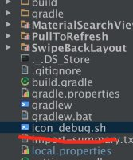

Android添加图标
第一步
将自己的脚本赋值到android studio的项目之中
第二步
点击android studio中的终端，运行如下命令apk >添加debug图标以及版本号（sh名称 版本号）
第三步
将需要的图片资源放置在drawable文件夹中
资源文件
密码 j4vn
当然脚本还有很多需要改进，并且必须要安装imagemagic和ghostscript才可以
debug图标